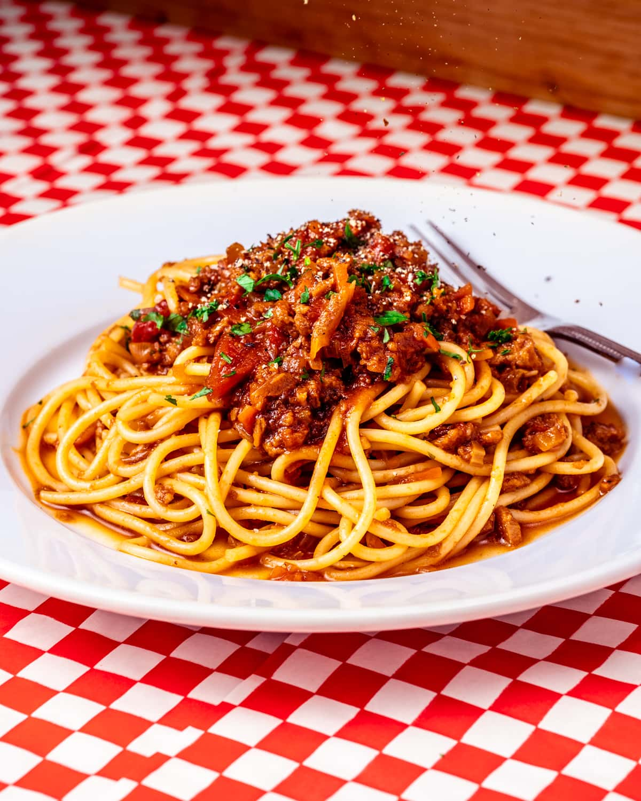

Home
Vegan Bolognese Recipe

Description
A cheap & simple vegan bolognese, naturally flavoured and full of goodness!
Ingredients
Vegetables
- 1 diced White Onion
- 5 minced Garlic Cloves
- 2 diced Carrots
- 2 diced Celery Stalks
Sauce
- 1Tbsp Tomato Paste
- 1 400g can Chopped Tomatoes
- 1 500g carton Tomato Passate
- 1 cup Textured Vegetable Protein (or 1 can of Lentils)
- 1 Vegetable Stock Cube
- 1Tbsp Italian Seasoning
- 1tsp Chilli Flakes
- 2tsp Sugar
- Salt & Pepper to taste
Steps
Prep
- Dice the carrot and celery into roughly 1cm cubes (actual size is not so important, so long as they are consistent. This will allow them to cook at a similar rate).
- Dice the onion and mince the garlic cloves.
Sauce
- Heat a olive oil in the pot on medium heat.
- Fry diced onion until softened and golden. Then, add minced garlic.
- After 2-3m, add the tomato paste, italian seasoning and chilli flakes. Toast ingredients for 1-2minutes, ensuring they do not burn.
- Then, add the celery and carrot, mixing well.
- Once veg has began to soften, add chopped tomatoes, passata, TVP, sugar and vegetable stock cube.
- Cook for 20 minutes to let flavours deepen. Taste regularly to balance flavours. Add water if sauce is too thick.
- Serve with pasta of choice.